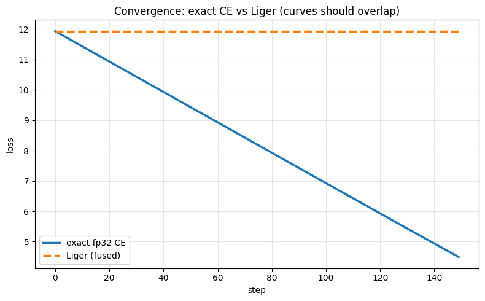

The largest tensor in my Qwen3-0.6B training run is not a weight, not an activation checkpoint, not an optimizer state. It is the cross-entropy logit matrix, and it exists for roughly one kernel launch, purely to be reduced to a single scalar loss. This post is about measuring exactly how expensive that tensor is, deleting it, and proving the deletion changes nothing about training. The benchmark runs end to end on a free Kaggle T4, which is rather the point.
The final layer of a language model projects each token's hidden state to a logit over the vocabulary. For N tokens and vocabulary V, that is an N×V matrix, and the standard loss path upcasts it to fp32. My model is small (596M parameters, hidden dimension 1,024) but its tokenizer is Qwen3's, with V = 151,936. At my training micro-batch (4 × 4,096 = 16,384 tokens):
16,384 × 151,936 × 4 bytes = 9.96 GB
per micro-batch, before the backward pass wants its own copies. That single ephemeral matrix is larger than all of the model's weights combined. And the cost is N×V, completely independent of model size, which is why a small model with a large vocabulary pays the most disproportionate tax. The Cut-Cross-Entropy paper quantifies the direction on A100s: the loss head accounts for 40% of training memory on Phi-3.5-mini (32k vocab), 65% on Llama-3-8B (128k), and 89% on Gemma-2-2B (256k). Those numbers confound vocab with model size, so treat them as a direction, not a constant. But the direction is unambiguous.
This is not a hypothetical. On 2026-06-08, a throughput probe on my GB10 (micro-batch 16 × sequence 4,096, so 65,536 tokens) tried to materialize a ~40 GB fp32 logit tensor. The GB10 has ~119 GB of unified CPU+GPU memory: there is no VRAM boundary to bounce off, so the allocation marched into the shared pool until the kernel OOM-killer shot the machine. Hard reboot, mid-run.
Two guardrails came out of the autopsy, both still in the trainer today. First, a dependency-free chunked masked cross-entropy: iterate the flattened logits in 8,192-row chunks, compute the loss per chunk with sum-reduction, accumulate. The full (N, 151,936) fp32 matrix is never materialized. A correctness oracle asserts the chunked result matches the reference masked NLL to under 1e-4 before any GPU hours are spent. Second, a process-level allocator cap, so a future over-allocation raises a catchable OutOfMemoryError instead of rebooting the box. The rule is now codified in the repo: chunk cross-entropy for any vocab over ~64k; never materialize (N, vocab) fp32 logits.
The side project was to benchmark the loss-computation spectrum properly, on hardware anyone can reproduce: a free Kaggle T4 (16 GB, fp16), at exactly my training shape, V = 151,936, D = 1,024, N swept from 1,024 to 32,768. Four methods: naive (materialize the logits, my original trainer), torch.compile (fuses ops, still materializes the logits), Liger's fused cross-entropy (chunks the lm_head so the full matrix never exists), and CCE (never materializes any logit tile; more on why it's absent from the results below).
Correctness is a hard gate, run first. A faster loss that is subtly wrong doesn't crash. It silently corrupts every optimizer step and surfaces weeks later as an unexplained convergence gap. Against an fp32 unfused oracle, checking the scalar and both gradients that flow into training, Liger measured: |Δloss| ≈ 9.5×10⁻⁷, max |Δ| of 1.8×10⁻⁷ on the hidden-state gradient and 2.4×10⁻⁷ on the weight gradient. Effectively bit-exact. A convergence A/B (training an lm_head on fixed synthetic data with exact fp32 CE versus the fused kernel) produced indistinguishable loss curves, as the gradient agreement predicts.

The memory result, measured (peak GB, T4, fp16):
N tokens 1,024 2,048 4,096 8,192 16,384 32,768
naive 3.77 5.64 9.38 OOM OOM OOM
torch.compile 2.53 2.84 3.48 4.74 7.26 12.30
Liger (fused) 3.15 3.16 3.17 3.20 3.25 3.36
The naive path peaks at 9.38 GB at 4,096 tokens and is dead past it. torch.compile cuts real memory but still materializes the logits, so it climbs linearly toward the 16 GB wall. Liger is flat at ~3.2 GB across the entire sweep. At my actual micro-batch of 16,384 tokens the comparison reads naive = OOM, torch.compile = 7.26 GB, Liger = 3.25 GB, and it stays flat at double that length. Memory footprint is arithmetic, so unlike throughput this result transfers to any GPU: fused cross-entropy makes loss memory approximately independent of batch × sequence length. That flat line is the whole point. It removes the wall that forces small micro-batches.
My T4 throughput numbers show Liger's kernels running far slower than naive: seconds against milliseconds. I am not publishing that as a verdict on the kernel, because it isn't one. Liger's Triton paths are tuned for Ampere and newer, and Turing-plus-fp16 is their documented worst case, so the absolute milliseconds are an artifact of the hardware. For speed, the published A100 hierarchy (Gemma-2-2B, 256k vocab, loss+grad) is: naive 207 ms, torch.compile 143 ms, Liger 303 ms, CCE 135 to 145 ms. On this run I claim exactly what I measured, the memory win and the OOM wall's removal, at ~10⁻⁶ agreement on the loss and ~2×10⁻⁷ on the gradients, not a speed win. (Also worth knowing: Liger's famous "20% throughput / 60% memory" headline describes their whole kernel suite in real training, never fused cross-entropy alone.)
CCE, the A100 state of the art, shrinks the logit term to roughly a megabyte. It installs and imports on Kaggle but cannot run there: its kernel requests 96 KB of shared memory per block against Turing's 64 KB cap. It needs Ampere or newer, which makes it the on-box GB10 follow-up, along with a kernel-level roofline for real throughput and a pretraining-scale, seeded A/B for CCE's 2⁻¹² gradient filter (its published no-regression evidence is fine-tuning-only). The workflow is the takeaway I care about: verify cheaply on a free GPU (correctness gate, transferable memory arithmetic, honest caveats) before spending on-box hours.
The notebook runs end to end on a free Kaggle T4. Run it yourself: the notebook on Kaggle. The chunked-CE trainer code and the 2026-06-08 crash post-mortem live in BuildFromScratch. References: Cut Cross-Entropy, arXiv 2411.09009 (ICLR 2025, code); Liger Kernel, arXiv 2410.10989 (code).